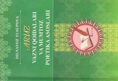

AVMumtoz adabiyotimiz va aruz vazni qoidalari haqida amaliy o'quv qo'llanma.
Ushbu o'quv qo'llanmada Sharq mumtoz poetikasining asosini tashkil etuvchi ilmi aruz, ilmi badi' va ilmi qofiya qoidalari atroflicha tahlil qilingan. Kitobda aruz nazariyasini o'rgatish mumtoz ijodkorlar, xususan, Alisher Navoiy ijodi misolida sodda va tushunarli tarzda amalga oshirilgan. Qo'llanma filologiya fakulteti talabalari, mumtoz adabiyot ixlosmandlari va tadqiqotchilar uchun mo'ljallangan.